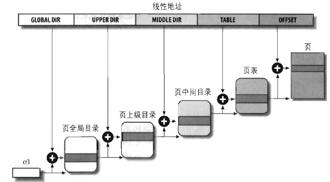

Linux内核学习——内存寻址
近年来陆陆续续对Linux内核各模块做些研究，本文是对Linux内核中内存寻址的一点研究。主要参考ULK以及毛批，结合自己的一些深入的理解，以及从源代码中翻箱倒柜获取的心得。
内存寻址
对x86处理器来说，内存地址有三个形而上的概念：逻辑地址、线性地址以及物理地址。 - 逻辑地址(logical address) - 每个逻辑地址都由一个段(segment)和偏移量(offset或displacement)组成，偏移量是段起始到实际地址之间的距离。 - 线性地址(linear address/virtual address) - 32位无符号整数，范围从0x00000000到0xffffffff。 - 物理地址 - 物理内存所用的真实地址，与CPU地址引脚发到内存总线的电信号相对应。物理地址是32位或36位（通过宏扩展）无符号整数。
逻辑地址
16位段选择符:32位段内RVA。
段选择符
段选择符存放在cs,ss,ds,es,fs,gs，他们都是16位的段寄存器。 - cs 代码段寄存器 - ss 栈段寄存器 - ds 数据段寄存器 - es,fs,gs作一般用途，可指向任意数据段
cs寄存器含有一个两位的字段，用以指明CPU的当前特权级(Current Privilege Level, CPL)。0表示最高优先级，3表示最低优先级。Linux只有0和3，这就是我们常说的内核态和用户态。
段描述符
每个段由一个64位的段描述符(Segment Descriptor)表示，描述段的特征。段描述符放在全局描述符表(GDT)或局部描述符表(LDT)中。GDT只有一个(多处理器的话每个CPU各有一个)，如果进程除了存放在GDT的段之外还需要创建附加段，就可以有自己的LDT。gdtr寄存器存放GDT的地址和大小，ldtr寄存器存放当前正在使用的LDT地址和大小。
这里引用ulk的图：
- Base
- 段起始线性地址
- G
- 粒度标志：0表示段大小以字节为单位，1表示4K字节为单位。
- D or B
- 第54位在代码段中称作D，而数据段中称作B。如果段RVA是32位则置1，16位则清0（Intel手册有描述，我对此暂不感兴趣）。
- AVL
- Linux忽略此位。
- Limit
- 存放段中最后一个内存单元的偏移量，Limit和Base共同决定了段的位置和长度。如果G清0，则一个段大小在1个字节到1MB之间变化；如果G置1，则在4KB到4GB之间变化。 > 因为LIMIT是20位，1字节为单位时，段大小就是1M，4K做单位，段大小就是4G。而BASE是32位所以基地址范围就是0~4G。
- S
- 系统标志：0表示系统段，存储诸如LDT这种关键数据结构，1表示普通的代码段或数据段（栈段本质上是数据段）。
- Type
- 段的类型特征和存取权限。这个值具体段描述符表具体分析。
- DPL(Descriptor Privilege Level)
- 描述符特权级字段：用于限制对该段的存取。它表示为访问这个段而要求的CPU最小的优先级。故DPL设为0的段只能当CPL为0时（内核态）才可访问，而DPL设3的段对任何CPL的值都是可访问的。
- P
- Segment-Present标志：0表示段当前不在内存中。Linux总是把这个标志设为1，因为它从来不把整个段交换到磁盘上去。 > 后面了解到，Linux实际上干脆没怎么鸟Intel的这种段式设计，而是直接在页式管理上做文章。段式管理仅仅只是个架子，所以这个P位也就始终是1了，即Linux管理的单元是页，而不是段。也就明白了为什么网络上的资料中，有些说是段页式管理，有些说是页式管理。
不够清楚？再从毛德操老师那儿盗个图：
Linux广泛的使用了4种段描述符： - 代码段描述符 - S为1（非系统段），在GDT或LDT中出现。 - 数据段描述符 - S为1（非系统段），在GDT或LDT中出现。 - 任务状态段描述符 - 代表一个任务状态段(Task State Segment, TSS)，该段用于保存处理器寄存器的内容。只在GDT中出现，根据相应的进程是否正在CPU上运行，其Type字段的值分别为11或9。S标志显然是0。 > 这个TSS暂时不甚清楚，读到进程切换时再看，先Mark。 - 局部描述符表描述符(LDTD) - 这个段描述符代表一个包含LDT的段，它在GDT中。相应Type字段值为2，S为0。
逻辑地址16位段选择符+32位RVA组成，段选择符放在段寄存器中，段描述符放在对应的GDT或LDT中，GDT和LDT在内存中，LDT在内存的位置可以通过在GDT中找LDTD而得知。gdtr永远指向单一的GDT，ldtr则指向当前正在用的LDT，也正是因为ldtr的动态变化，LDT的内存地址才需要在GDT中查找
地址转换加速
x86通过附加的非编程寄存器，加速了逻辑地址到线性地址的转换。每一个非编程的寄存器含有64位的段描述符，由相应的段寄存器中的段选择符来指定。每当一个段选择符被装入段寄存器时，相应的段描述符就由内存装入到对应的非编程CPU寄存器。此后对该段的逻辑地址转换只需要直接引用非编程寄存器中的段描述符即可。只有当段寄存器内容改变了，这时再重新装载段描述符到非编程寄存器。实际上，这就是个缓存的思想，出发点在于CPU访问寄存器速度远快于内存寻址。
段选择符->段描述符
两个概念清楚了，但却不了解段选择符如何找到段描述符。回过头来我们看看段选择符的字段： - Index - 指定了放在GDT或LDT中的相应段描述符的入口 - TI - 0表示在GDT，1表示在LDT。 - RPL - 请求者特权级：当相应的段选择符装入到cs寄存器中时，指示CPU当前的特权级；还可用于访问数据段时有选择地削弱处理器的特权级（Intel文档有，我暂时不感兴趣）。
高13位的Index是GDT或LDT内的索引，乘8即是相对地址（因为每个段描述符是8字节尺寸）。例如，如果GDT在0x00020000，段选择符index为2，那么段描述符的地址就是0x00020010。GDT中段描述符最多有8191个，也就是(1 << 13 - 1)。GDT第一项强制设成0，这是为了确保空段选择符的逻辑地址无效。
段选择符首次解析段描述符进而通过偏移定位到线性地址的过程如图：
x86下的面子工程
前面隐约提到了，Linux实际上并没有利用x86提供的段式设计，而是采用页式管理（相比较而言，页式管理比较简单，同时照顾了其他不支持分段的平台）。
2.6的Linux只在x86下需要分段，而且这个分段实际上是个面子工程。Linux用户态的所有进程使用相同的段对指令和数据寻址，内核态所有进程也使用相同的段来对指令和数据寻址。这也就是最主要的四个段：
| 段 | Base | G | Limit | S | Type | DPL | D/B | P |
|---|---|---|---|---|---|---|---|---|
| 用户代码段 | 0x00000000 | 1 | 0xfffff | 1 | 10 | 3 | 1 | 1 |
| 用户数据段 | 0x00000000 | 1 | 0xfffff | 1 | 2 | 3 | 1 | 1 |
| 内核代码段 | 0x00000000 | 1 | 0xfffff | 1 | 10 | 0 | 1 | 1 |
| 内核数据段 | 0x00000000 | 1 | 0xfffff | 1 | 2 | 0 | 1 | 1 |
所有的段都是0~0xFFFFFFFF 4G的寻址空间，也就是说它们共享同一片虚拟地址空间。换句话说，对于Linux来说，逻辑地址和线性地址是一致的，这也是为什么逻辑地址并不广为人知的原因，Linux的设计让他的存在感微乎其微。
区别之处在于DPL不同，这很好理解。数据段的Type为2也就是0010B，它表示可读可写，尚未受到访问。而代码段Type为10也就是1010B，表示可读可执行，尚未受到访问。CPU映射过程中会核对这些项。如果DPL为0，CS中RPL为3，对不起，不允许。
实际上，虽然Linux也借助x86的段式设计搞的像模像样，但实际上这里的权限判断核查，在后面Linux自身的页式管理中也会进行，可以说对于x86来说，这里的故作姿态是多余的，或者像毛德操老师说的那样，只不过是例行公事罢了。
4个段的段选择符由宏__USER_CS,__USER_DS,__KERNEL_CS,__KERNEL_DS分别定义。当对内核代码段寻址时，内核只需要把__KERNEL_CS宏值装入cs即可。
CPU的CPL反映了进程实在用户态还是内核态，由存放在cs寄存器的RPL字段指定。当CPL改变时，一些段寄存器必须更新。这一点很好理解，当cs寄存器的RPL字段是3，也就是说CPL为3，表示当前进程是用户态进程，那么此时ds寄存器就应该包含的是用户数据段的段选择符，也就是__USER_DS，而当cs寄存器RPL切换到0时，ds寄存器也要切换到内核态数据段。除了ds，ss亦是如此。Linux每个进程都有内核栈和用户栈，ring0和ring3之间的切换也会导致系统栈的切换。
可也注意到段描述符的定义，对于用户态和内核态来说，DPL上有着区分。
Linux GDT
每个CPU都有一个GDT，所有的GDT都在cpu_gdt_table数组中，所有的GDT的地址和大小都存放在cpu_gdt_descr数组中，它们用于初始化gdtr寄存器。
arch/i386/kernel/head.S一探究竟： 1
2
3
4
5
6
7
8
9
10
11
12
13
14
15
16
17
18
19
20
21
22
23
24
25
26
27
28
29
30
31
32
33
34
35
36
37
38
39
40
41
42
43
44
45
46
47
48
49
50
51
52
53
54
55
56
57
58
59
60/*
* 这里可以看到大小定义为GDT_ENTRIES*8-1，其中GDT_ENTRIES在include/asm-i386/segment.h中定义为32。大小后面就是32bit的cpu_gdt_table指针（.word和.long都是32bit）。再后面预留出了其他CPU的空间，每个都是8字节并用0填充。
*/
cpu_gdt_descr:
.word GDT_ENTRIES*8-1
.long cpu_gdt_table
.fill NR_CPUS-1,8,0 # space for the other GDT descriptors
...
/*
* The Global Descriptor Table contains 28 quadwords, per-CPU.
*/
.align PAGE_SIZE_asm
ENTRY(cpu_gdt_table)
.quad 0x0000000000000000 /* NULL descriptor */
.quad 0x0000000000000000 /* 0x0b reserved */
.quad 0x0000000000000000 /* 0x13 reserved */
.quad 0x0000000000000000 /* 0x1b reserved */
.quad 0x0000000000000000 /* 0x20 unused */
.quad 0x0000000000000000 /* 0x28 unused */
.quad 0x0000000000000000 /* 0x33 TLS entry 1 */
.quad 0x0000000000000000 /* 0x3b TLS entry 2 */
.quad 0x0000000000000000 /* 0x43 TLS entry 3 */
.quad 0x0000000000000000 /* 0x4b reserved */
.quad 0x0000000000000000 /* 0x53 reserved */
.quad 0x0000000000000000 /* 0x5b reserved */
/*
* 这里可以看到4个段和此前的描述一致
*/
.quad 0x00cf9a000000ffff /* 0x60 kernel 4GB code at 0x00000000 */
.quad 0x00cf92000000ffff /* 0x68 kernel 4GB data at 0x00000000 */
.quad 0x00cffa000000ffff /* 0x73 user 4GB code at 0x00000000 */
.quad 0x00cff2000000ffff /* 0x7b user 4GB data at 0x00000000 */
.quad 0x0000000000000000 /* 0x80 TSS descriptor */
.quad 0x0000000000000000 /* 0x88 LDT descriptor */
/* Segments used for calling PnP BIOS */
.quad 0x00c09a0000000000 /* 0x90 32-bit code */
.quad 0x00809a0000000000 /* 0x98 16-bit code */
.quad 0x0080920000000000 /* 0xa0 16-bit data */
.quad 0x0080920000000000 /* 0xa8 16-bit data */
.quad 0x0080920000000000 /* 0xb0 16-bit data */
/*
* The APM segments have byte granularity and their bases
* and limits are set at run time.
*/
.quad 0x00409a0000000000 /* 0xb8 APM CS code */
.quad 0x00009a0000000000 /* 0xc0 APM CS 16 code (16 bit) */
.quad 0x0040920000000000 /* 0xc8 APM DS data */
.quad 0x0000000000000000 /* 0xd0 - unused */
.quad 0x0000000000000000 /* 0xd8 - unused */
.quad 0x0000000000000000 /* 0xe0 - unused */
.quad 0x0000000000000000 /* 0xe8 - unused */
.quad 0x0000000000000000 /* 0xf0 - unused */
.quad 0x0000000000000000 /* 0xf8 - GDT entry 31: double-fault TSS */
可以看到4个段的偏移是0x60,0x68,0x73,0x7b。同时，我们再到include/asm-i386/segment.h中看看几个段选择符对应宏的定义是否一致：
1
2
3
4
5
6
7
8
9
10
11
12
13#define GDT_ENTRY_DEFAULT_USER_CS 14
#define __USER_CS (GDT_ENTRY_DEFAULT_USER_CS * 8 + 3)
#define GDT_ENTRY_DEFAULT_USER_DS 15
#define __USER_DS (GDT_ENTRY_DEFAULT_USER_DS * 8 + 3)
#define GDT_ENTRY_KERNEL_BASE 12
#define GDT_ENTRY_KERNEL_CS (GDT_ENTRY_KERNEL_BASE + 0)
#define __KERNEL_CS (GDT_ENTRY_KERNEL_CS * 8)
#define GDT_ENTRY_KERNEL_DS (GDT_ENTRY_KERNEL_BASE + 1)
#define __KERNEL_DS (GDT_ENTRY_KERNEL_DS * 8)
完全一致！
Linux LDT
Linux用户态程序几乎不用LDT，内核定义了一个默认的LDT供大多数进程共享。默认LDT放在default_ldt数组中。它包含5项但内核仅用了2项：iBCS执行文件的调用门；Solaris/x86可执行文件的调用门。调用门是x86提供的一种机制，用于在调用预定义函数时改变CPU特权级。
某些进程仍然会需要创建自己的局部描述符表，比如Wine。Wine执行面向段的Windows程序。sys_modify_ldt()系统调用允许进程创建自己的LDT。
1
2
3
4
5
6
7
8
9
10
11
12
13
14
15
16
17
18
19
20asmlinkage int sys_modify_ldt(int func, void __user *ptr, unsigned long bytecount)
{
int ret = -ENOSYS;
switch (func) {
case 0:
ret = read_ldt(ptr, bytecount);
break;
case 1:
ret = write_ldt(ptr, bytecount, 1); //参数3表示旧式写
break;
case 2:
ret = read_default_ldt(ptr, bytecount);
break;
case 0x11:
ret = write_ldt(ptr, bytecount, 0); //参数3表示新式写
break;
}
return ret;
}
1 | |
在内核中找到mm_struct: 1
2
3
4
5
6
7
8
9
10
11
12
13
14
15
16
17
18
19
20
21
22
23
24
25
26
27
28
29
30
31
32
33
34
35
36
37
38
39
40
41
42
43
44
45
46
47
48
49
50
51
52
53
54
55
56
57
58
59
60
61
62
63
64
65
66
67
68
69
70
71
72
73
74
75
76
77
78
79
80
81
82
83
84struct mm_struct {
struct vm_area_struct * mmap; /* list of VMAs */
struct rb_root mm_rb;
struct vm_area_struct * mmap_cache; /* last find_vma result */
unsigned long (*get_unmapped_area) (struct file *filp,
unsigned long addr, unsigned long len,
unsigned long pgoff, unsigned long flags);
void (*unmap_area) (struct vm_area_struct *area);
unsigned long mmap_base; /* base of mmap area */
unsigned long free_area_cache; /* first hole */
pgd_t * pgd;
atomic_t mm_users; /* How many users with user space? */
atomic_t mm_count; /* How many references to "struct mm_struct" (users count as 1) */
int map_count; /* number of VMAs */
struct rw_semaphore mmap_sem;
spinlock_t page_table_lock; /* Protects page tables, mm->rss, mm->anon_rss */
struct list_head mmlist; /* List of maybe swapped mm's. These are globally strung
* together off init_mm.mmlist, and are protected
* by mmlist_lock
*/
unsigned long start_code, end_code, start_data, end_data;
unsigned long start_brk, brk, start_stack;
unsigned long arg_start, arg_end, env_start, env_end;
unsigned long rss, anon_rss, total_vm, locked_vm, shared_vm;
unsigned long exec_vm, stack_vm, reserved_vm, def_flags, nr_ptes;
unsigned long saved_auxv[42]; /* for /proc/PID/auxv */
unsigned dumpable:1;
cpumask_t cpu_vm_mask;
/* Architecture-specific MM context */
mm_context_t context; //mm_context_t中有ldt指针
/* Token based thrashing protection. */
unsigned long swap_token_time;
char recent_pagein;
/* coredumping support */
int core_waiters;
struct completion *core_startup_done, core_done;
/* aio bits */
rwlock_t ioctx_list_lock;
struct kioctx *ioctx_list;
struct kioctx default_kioctx;
unsigned long hiwater_rss; /* High-water RSS usage */
unsigned long hiwater_vm; /* High-water virtual memory usage */
};
/*
* The i386 doesn't have a mmu context, but
* we put the segment information here.
*
* cpu_vm_mask is used to optimize ldt flushing.
*/
typedef struct {
int size;
struct semaphore sem;
void *ldt; //void *是为了泛用性？
} mm_context_t;
#ifndef __ASSEMBLY__
struct user_desc {
unsigned int entry_number;
unsigned long base_addr;
unsigned int limit;
unsigned int seg_32bit:1;
unsigned int contents:2;
unsigned int read_exec_only:1;
unsigned int limit_in_pages:1;
unsigned int seg_not_present:1;
unsigned int useable:1;
};
#define MODIFY_LDT_CONTENTS_DATA 0
#define MODIFY_LDT_CONTENTS_STACK 1
#define MODIFY_LDT_CONTENTS_CODE 2
#endif /* !__ASSEMBLY__ */
对于LDT只是粗略的了解，暂不做细致的研究。
硬件分页机制
分页单元(page unit)把线性地址转换成物理地址。线性地址以固定长度为单位进行拆分，每一组称为页。页内部连续的线性地址被映射到连续的物理地址。每一页有自己的存取权限。分页单元把所有的RAM分成固定长度的页框(page frame)。每个页框包含一个页，所以页框的长度和页长度一致。
页框是真实的物理页，页只是一个虚拟的概念。页可能被映射到一个页框，也可能被转储在磁盘（内存交换）。
线性地址映射到物理地址的数据结构叫页表(page table)。页表放在主存中，在启用分页单元之前必须由内核对页表进行适当初始化。
x86支持分页，通过设置cr0寄存器的PG标志位。PG=0时，线性地址被解释成物理地址。x86分页单元处理4KB的页。
32位线性地址分成3个域：Directory(目录10bit) + Table(页表10bit) + Offset(偏移量12bit)。 线性地址转换分成两步完成，每一步都基于一种转换表，第一种转换表被称为页目录表(page directory)，第二种转换表被称为页表(page table)。
这种设计减少了每个进程页表所需RAM的数量（如果页表只有一级，那么高20位做表项会消耗4MB RAM（每项4字节），但程序往往并不会使用4GB中所有的线性地址空间）。另一方面，每个活动进程必须有一个分配给它的页目录，但没必要为进程的所有页表都分配RAM。当进程实际需要一个页表时再分配RAM更为高效。这就起到了降低消耗的效果。
正在使用的页目录的物理地址放在控制寄存器cr3中。线性地址内Directory字段决定页目录中的目录项，目录项指向适当的页表。Table字段决定页表中的表项，表项含有页所在页框的物理地址。Offset决定了页框内的偏移。
Offset为12bit刚好就是4K，一个页框的大小也正是4K。页目录和页表都是1024项。不管你怎么拆，最后的寻址都是4G。
到此，线性地址完美转换到物理地址。
放一张ulk的图：
页目录&页表
页目录项和页表项结构相同： - Present字段 - 1代表页或页表在主存中，0代表不在主存中（此时剩余位可由OS自用）。如果执行一个地址转换所需的页表项或页目录项中Present清0，那么分页单元就把该线性地址存放在cr2中，并产生14号异常：缺页异常。 > 对于未装载到RAM中的页表来说，页表项全都是0，这一标志位页是0，同样可以触发缺页异常，很巧妙的设计。 - 包含页框物理地址最高20位的字段 - 由于每个页框有4KB容量，所以物理地址必须是4096的倍数，那么物理地址的低12位一定是0（所以只需要高20位）。如果该字段指向一个页目录，相应的页框就含有一个页表；如果指向一个页表，相应的页框就含有一页数据。 - Accessed标志 - 当分页单元对相应页框寻址时置位。选中的页如果被交换出去，这一标记被OS自定义。分页单元不会重置这个标记，OS需要take care。 - Dirty标志 - 页表中才有意义。每当对一个页框进行写操作时就设置这个标志。选中的页如果被交换出去，这一标记被OS自定义。分页单元不会重置这个标记，OS需要take care。 - Read/Write标志 - 含有页或页表的存取权限 - User/Supervisor标志 - 含有访问页或页表所需的特权级 - PCD，PWT标志 - 控制硬件高速缓存处理页或页表的方式 - Page Size标志 - 只应用于目录项。如果置1则页目录项指的是2MB或4MB的页框。 > x86引入了扩展分页，允许页框大小为4MB而不是4KB。扩展分页把大段连续线性地址转成物理地址，此时内核无需使用中间页表进行转换。此时线性地址划分成Directory高10位+Offset22位。通过设置cr4寄存器的PSE标志能使扩展分页与常规分页共存。 - Global标志 - 只应用于页表项。该标记由Pentium Pro引入，防止常用页从TLB高速缓存（转换后援缓冲器）中刷新出去。只有在cr4寄存器的页全局启用(PGE)标志置位时该标记才有用。
一些标志不是太懂，后面再具体分析。
硬件保护
分页单元的保护和分段不一样，分段的权限有4种（0-3），但分页要依赖User/Supervisor标志，只能是0或1（两种）。标志位0时，只有当CPL小于3(Linux也就只有0)才能对该页寻址；如果为1则无条件限制。此外，段有3种存取权限（读写执行），页也因为只能依赖Read/Write标志位，所以只有2种。0表示只读，1表示读写。
为何页的保护设计上如此吝啬？是否对于Linux来说，这样低配的硬件保护已经足够。
PAE分页
x86处理器管脚实际上有36而不是32，这是对于需求所做的后期扩展。从硬件设计来说，寻址能力就增长到64G。不过，这需要引入一种新的分页机制把32位线性地址转换成36位物理地址才行。
这就是PAE机制，通过设置cr4寄存器的PAE标志激活PAE。页目录项的页大小标志PS启动大尺寸页(2MB)。 机制的修改： - 64G的RAM（显然64G只是理论上的一种概念）分为1<<24个页框，页表项物理地址字段从20位扩展到24位。PAE页表项必须包含12个标志位和24个物理地址，总数和为36，页表项大小从32位变成64位增加了一倍，故一个4K的页表包含512个页表项而不再是1024个，进而Table的10bit可以缩到9bit。Directory和Table一致（页目录项和页表项同结构），也是9bit，所以空闲出了2bit。 - 引入页目录指针表(PDPT)，由4个64位表项组成。空闲的2bit给了PDPT。 - cr3寄存器包含一个27位的PDPT基地址字段。PDPT放在RAM的前4G中，并在32字节(1<<5)倍数上对齐，故27位足以表示其基地址（低5位都是0）。 - 当把线性地址映射到4K的页时（页目录项中PS清0），32位线性地址解释如下： - cr3 - 指向一个PDPT - bit 31-30 - 指向PDPT中4个项中的一个 - bit 29-21 - 指向页目录中512个项中的一个 - bit 20-12 - 指向页表中512项中的一个 - bit 11-0 - 4K页中的偏移量 - 当把线性地址映射到2MB的页时（页目录项中PS置1），32位线性地址解释如下： - cr3 - 指向一个PDPT - bit 31-30 - 指向PDPT中4个项中的一个 - bit 29-21 - 指向页目录中512个项中的一个 - bit 20-0 - 2MB页中的偏移量
借CSDN，白水煮鸡蛋的图一用：
关闭PS(4K)
开启PS(2M)
PAE没有改变线性地址，只是扩展了物理地址。
Linux的分页设计
2.6.10前的Linux有三个分页级别，2.6.11之后有四个分页级别，分别是： - 页全局目录(PGD) - 页上级目录(PUD) - 页中间目录(PMD) - 页表(PT)
PGD包含若干PUD，PUD包含若干PMD，PMD包含若干PT的地址。每个页表项指向一个页框。线性地址被分成5部分。每一部分的大小与具体的计算机体系结构有关。
Linux分页设计->x86硬件分页
对于PAE未开启的系统，两级页表足够了。所以Linux对此的处理很简单，PUD和PMD的位数全部设定为0，程序员中只是摆摆样子，走个过场。

如果PAE开启，则PGD对应x86的PDPT，取消了PUD，PMD对应x86的页目录，Linux的页表对应x86的页表。
64位使用三级还是四级取决于硬件对线性地址的位的划分。64位的我暂时不关心。
每个进程有自己的PGD和PT。当发生进程切换时，Linux把cr3寄存器的内容保存到前一个执行进程的描述符中，然后把下一个要执行进程的描述符的值装入cr3寄存器。因此，新进程重新开始在CPU执行时，分页单元指向一组正确的页表。
线性地址相关宏
- PAGE_SHIFT
- x86是12, Offset字段
- PMD_SHIFT
- Offset+Table总位数，PAE禁用时为22，激活时为21。
- PUD_SHIFT
- x86总是等于PMD_SHIFT
- PGDIR_SHIFT
- PAE禁用时等同于PMD_SHIFT，激活时就是30。
- PTRS_PER_PTE, PTRS_PER_PMD, PTRS_PER_PUD以及PTRS_PER_PGD
- 计算页表、页中间目录、页上级目录和页全局目录表中表项的个数。PAE被禁用时，值就是1024,1,1,1024。PAE激活时就是512,512,1,4。
页表处理相关宏
pte_t,pmd_t,pud_t,pgd_t,pgprot_t- 描述页表项，页中间目录项，页上级目录，页全局目录项格式和一个单独表项相关保护标志。PAE激活时都是64位数据类型，否则都是32位数据类型。
__pte,__pmd,__pud,__pgd,__pgprot- 把无符号整数转成所需类型。
pte_val,pmd_val,pud_val,pgd_val,pgprot_val- 把类型转成无符号整数
pte_none,pmd_none,pud_none,pgd_none- 相应表项为1则值为0，相应表项为0则为1。
pte_clear,pmd_clear,pud_clear,pgd_clear- 清除相应页表的一个表项。
ptep_get_and_clear()清除一个页表项并返回前一个值。
- 清除相应页表的一个表项。
set_pte,set_pmd,set_pud,set_pgd- 向一个页表项写入指定的值。
set_pte_atomic与set_pte作用相同，在PAE激活时保证原子写入。
- 向一个页表项写入指定的值。
pte_same(a,b)- 如果a和b两个页表项指向同一页并指定相同的访问优先级，那么返回1，否则返回0。
pmd_large(e)- 如果PMD项e指向一个大型页(2MB或4MB)，返回1，否则返回0。
pmd_bad- 如果目录项指向一个不能使用的页表，返回1，否则返回0。
- 不可用页表包括：
- Present为0，不在主存中
- 只读(Read/Write为0)
- Acessed或Dirty被清0（对每个现有的页表，Linux总是强制设置这些标志）
pud_bad,pgd_bad总是0。没有pte_bad宏，因为页表项引用一个不在主存中的页，一个不可写的页或一个根本无法访问的页都是合理的。
pte_present,pmd_present- 如果页表项的Present或PageSize为1，则返回1，否则为0。
- 如果表项的Present为1，则pmd_present为1。pud_present和pgd_present总是1。
- 一些读页标志的函数（除pte_file外，其他函数都只在pte_present为1时才有效）
pte_user()- 读User/Supervisor
pte_read()- 读User/Supervisor(表示x86处理器上的页不受读的保护)
pte_write()- 读Read/Write
pte_exec()- 读User/Supervisor(表示x86处理器上的页不受代码执行的保护)
pte_dirty()- 读Dirty标志
pte_young()- 读Accessed标志
pte_file()- 读Dirty标志
- 设置页表项各标志
mk_pte_huge()- 设置页表项中Page Size和Present标志
pte_wrprotect()- 清Read/Write
pte_rdprotect()- 清User/Supervisor
pte_exprotect()- 清User/Supervisor
pte_mkwrite()- 设置Read/Write
pte_mkread()- 设置User/Supervisor标志
pte_mkexec()- 设置User/Supervisor标志
pte_mkclean()- 清Dirty
pte_mkold()- 清Accessed（未访问）
pte_mkyoung()- 设置Accessed（访问过）
pte_modify(p,v)- 页表项p的所有访问权限设为指定值v
ptep_set_wrprotect()- 与pte_wrprotect()类似，但作用于指向页表项的指针
ptep_set_access_flags()- 如果Dirty为1，则将页存取权限设为指定值，并调用flush_tlb_page()函数。
ptep_mkdirty()- 与pte_mkdirty()类似，作用于指向页表项的指针
ptep_test_and_clear_dirty()- 与pte_mkclean()类似，作用于指向页表项的指针并返回Dirty标志的旧值
ptep_test_and_clear_young()- 与pte_mkold()类似，但作用于指向页表项的指针并返回Accessed标志的旧值
页表项操作宏
pgd_index(addr)- 线性地址addr对应的目录项在PGD中索引
pgd_offset(mm, addr)- 接收内存描述符地址mm和线性地址addr作为参数。该宏产生地址addr在页全局目录中相应表项的线性地址；通过内存描述符mm内的一个指针可以找到这个PGD
pgd_offset_k(addr)- 产生主内核页全局目录中的某个项的线性地址，该项对应于地址addr。
pgd_page(pgd)- 通过页全局目录项pgd产生PUD所在页框的页描述符地址。
pud_offset(pgd, addr)- pgd和addr产生pud线性地址
pud_page(pud)- pud产生pmd的线性地址
pmd_index(addr)- 产生线性地址addr在pmd中对应目录项的索引
pmd_offset(pud, addr)- 通过pud和addr产生pmd中的线性地址。
pmd_page(pmd)- 通过pmd产生页表的页描述符地址。
mk_pte(p, prot)- 接收页描述符地址p和一组存取权限prot作为参数，并创建相应的页表项
pte_index(addr)- 产生线性地址addr对应的表项在页表中的索引
pte_offset_kernel(dir, addr)- addr在pmd中有对应的一项，该项由该宏产生，即页表的线性地址。（只在内核页表上使用）
pte_offset_map(dir, addr)- 指向pmd的dir和addr产生对应的页表项的线性地址。若页表被保存在高端内存中，那么内核建立一个临时内核映射，并用pte_unmap进行释放。pte_offset_map_nested宏和pte_unmap_nested宏是相同的，但他们用不同的临时内核映射。
pte_page(x)- 返回页表项x所引用页的描述符地址
pte_to_pgoff(pte)- 从一个页表项的pte字段内容中提取出文件偏移量，该偏移量对应着一个非线性文件内存映射所在的页
pgoff_to_pte(offset)- 为非线性文件内映射所在的页创建对应页表项的内容
页分配函数
pgd_free(pgd)- 释放pgd项。PAE激活时，释放用户态线性地址对应的三个pmd
pud_alloc(mm,pgd,addr)- 两级或三级分页系统下，do nothing，返回pgd线性地址。
pud_free(x)- 两级或三级分页系统下，do nothing。
pmd_alloc(mm,pud,addr)- 定义该函数使普通三级分页系统可以为线性地址addr分配一个新的pmd。PAE未激活时，函数仅返回pud值。如果PAE激活，返回addr对应的pmd的线性地址。mm被忽略
pmd_free(x)- do nothing，因为pmd的分配和释放随同其父亲pgd进行。
pte_alloc_map(mm,pmd,addr)- 返回对应的页表项的地址。如果pmd为空，该函数通过调用函数pte_alloc_one()分配一个新页表，如果分配了新页表，addr对应的项就被创建，同时User/Supervisor标志置1。如果页表被保存在高端内存，则内核建立一个临时内核映射。
pte_alloc_kernel(mm,pmd,addr)- 如果与地址addr相关的pmd为空，该函数分配一个新页表。然后返回与addr相关的页表项的线性地址。该函数仅被主内核页表所用。
pte_free(pte)- 释放pte相关页表。
pte_free_kernel(pte)- 等价于pte_free()，但主内核页表使用它。
clear_page_range(mmu,start,end)- 从start到end通过反复释放页表和清除pmd项来清除进程页表的内容
物理内存布局
初始化时，内核建立一个物理地址映射来指定哪些范围物理地址对内核不可用（不可用的物理地址范围内的页框和含有内核代码和已初始化的数据结构的页框，这些保留页框不会被交换到磁盘，也不会被动态分配）。
物理地址的布局并不会从RAM的0x0开始处放置内核，因为BIOS的优先级更高。BIOS暂时不感兴趣，skip。这一部分可以参考ulk，有详细的介绍。
进程页表
对进程来说，线性地址分两部分：0x0-0xbfffffff为用户态和内核态所用，0xc0000000到0xffffffff为内核态地址(0xc0000000就是内核代码中常见的PAGE_OFFSET)。
内核页表
内核维持着一组自己用的页表，驻留于所谓的主内核PGD(master kernel Page Global Directory)中。系统初始化后，这组页表还未从任何进程或任何内核线程直接使用；主内核页全局目录的最高目录项部分作为参考模型，为系统中每个普通进程对应的PGD项提供参考。
内核页表的载入相当复杂，其采用一种分阶段的方式，在第一阶段CPU仍未实模式，PAE不可能开启，分页未启用，此时直接装载内核代码数据段，实现与物理地址相同的线性地址进行映射（达成一种实模式和保护模式都很容易对这8MB寻址的目的）。第二阶段内核利用剩余RAM建立分页表。这一部分相当复杂，还要考虑到具体的RAM大小，我本人对此不甚感冒，不展开了。
参考文献
- 《深入理解Linux内核》
- 《Linux内核源代码情景分析(上)》
- GCC汇编器语法
- 浅析linux内核内存管理之PAE